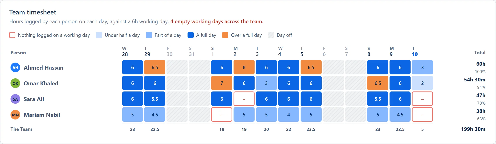
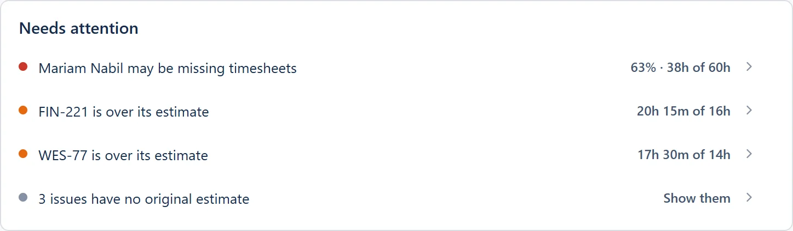
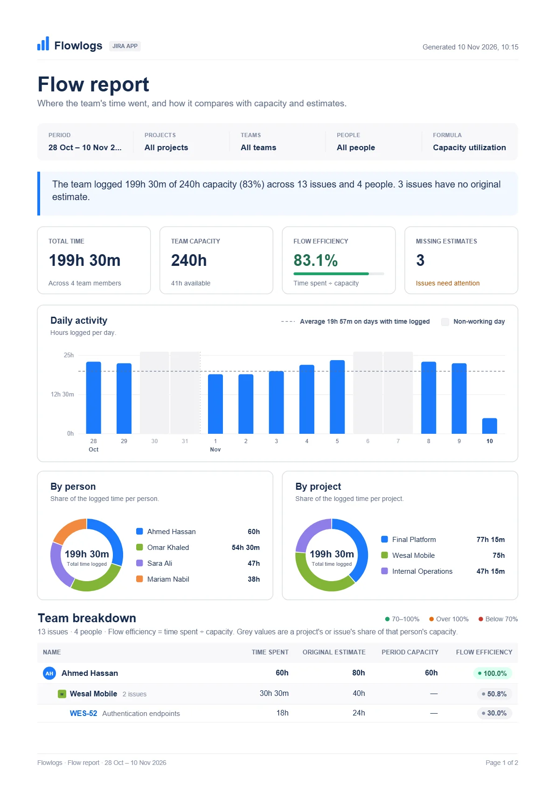
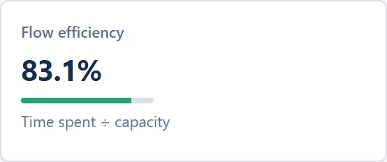
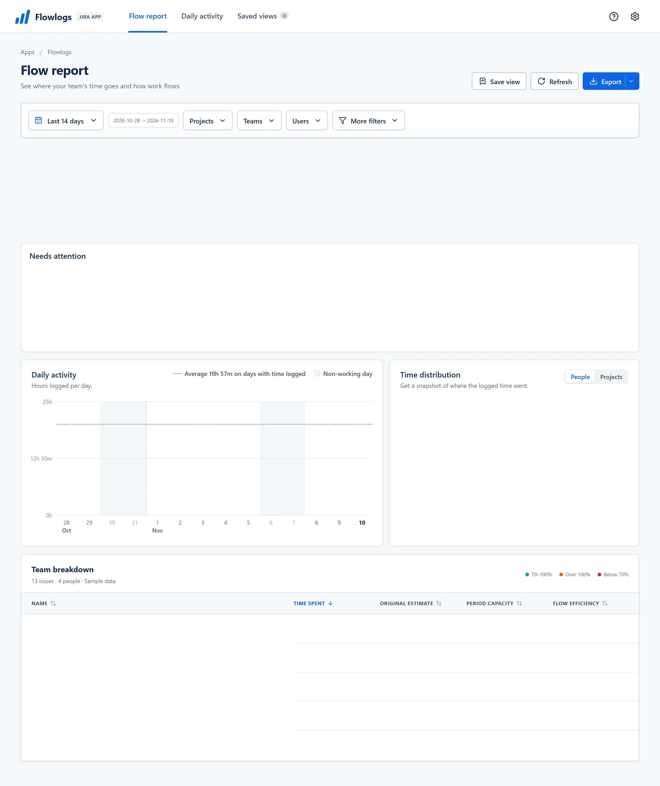
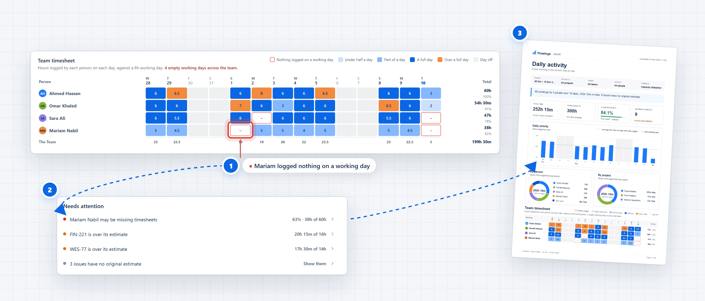

Para Jira Cloud · Gratis
Descubre quién registró sus horas, y quién no.
Los registros de trabajo que tu equipo ya lleva en Jira, convertidos en una hoja de horas del equipo, un informe de capacidad y un PDF listo para enviar. Sin configurar nada.
Detéctalo. Un día laborable sin horas registradas aparece con un borde rojo en la hoja de horas del equipo.
Actúa. Needs attention indica quién es y cuánto le falta para cubrir su capacidad.
Infórmalo. Con un clic, la misma imagen llega a la dirección en un PDF A4 limpio.
Funciona en Atlassian Forge · Ningún dato sale de Jira · Nombres en árabe en cada exportación

Nada registrado en un día laborable


Gratis en el Marketplace
Sin licencias ni límite de usuarios
Lee los registros que ya hay en Jira
Sin doble registro
Los datos se quedan en Atlassian
Funciona en Atlassian Forge
Exportaciones listas para árabe
Los nombres se ven bien en PDF, Excel y CSV
Dentro del informe de flujo
Todo el periodo de tu equipo, en una sola página de Jira

Ábrelo en Jira
Nada que configurar. Flowlogs lee los registros de trabajo que tu equipo ya lleva en Jira.
El periodo en una frase
Horas registradas frente a la capacidad, en cada incidencia y cada persona, antes de desplazarte.
Cuatro cifras que importan
Tiempo total, capacidad del equipo, eficiencia de flujo y estimaciones que faltan, una junto a otra.
Quién te necesita, con nombre
Needs attention señala las hojas de horas que faltan y las incidencias que superan su estimación.
Cada día, cada persona
Horas por día frente a la media del equipo, y adónde fue el tiempo.
Hasta cada incidencia
El tiempo de cada persona frente a la estimación y la capacidad, con la eficiencia de flujo en color.
Envíalo en PDF
Un clic en Export y la dirección recibe la misma imagen en un informe A4 limpio.

Ábrelo en Jira
Nada que configurar. Flowlogs lee los registros de trabajo que tu equipo ya lleva en Jira.
El periodo en una frase
Horas registradas frente a la capacidad, en cada incidencia y cada persona, antes de desplazarte.
Cuatro cifras que importan
Tiempo total, capacidad del equipo, eficiencia de flujo y estimaciones que faltan, una junto a otra.
Quién te necesita, con nombre
Needs attention señala las hojas de horas que faltan y las incidencias que superan su estimación.
Cada día, cada persona
Horas por día frente a la media del equipo, y adónde fue el tiempo.
Hasta cada incidencia
El tiempo de cada persona frente a la estimación y la capacidad, con la eficiencia de flujo en color.
Envíalo en PDF
Un clic en Export y la dirección recibe la misma imagen en un informe A4 limpio.
Una hoja de horas que falta, de principio a fin
De un día vacío a un informe en tres clics

Detéctalo
Un día laborable sin horas registradas aparece con un borde rojo en la hoja de horas del equipo.
Actúa
Needs attention indica quién es y cuánto le falta para cubrir su capacidad.
Infórmalo
Con un clic, la misma imagen llega a la dirección en un PDF A4 limpio.
¿Te suena?
Revisar las horas no debería ser abrir pestañas y adivinar
Perseguir a la gente cada jueves para que registre sus horas.
Abrir un perfil tras otro para saber quién olvidó registrar el trabajo de ayer.
Exportar registros a una hoja de cálculo para responder una sola pregunta.
Descargar archivos CSV y escribir fórmulas solo para comparar las horas registradas con la capacidad del sprint.
Adivinar si el equipo tiene capacidad para el próximo sprint.
Comprometer trabajo sin saber quién va al límite ni qué incidencias superan su estimación.
Hoja de horas del equipo
Las horas que faltan saltan a la vista
Cada persona, cada día, coloreado frente a una jornada laboral. Un día sin nada registrado lleva un borde rojo, así sabes a quién recordárselo antes de la revisión del sprint. Haz clic en un día para ver los registros que hay detrás.
- Colores para menos de media jornada, parte de la jornada, una jornada completa y más de una jornada
- Haz clic en un día para ir directo a sus registros

Informe de flujo
Capacidad y estimaciones en una sola vista
Tiempo total, capacidad y eficiencia de flujo arriba, una breve lista Needs attention debajo y cada cifra rastreable de la persona al proyecto y a la incidencia.
- Las incidencias que superan su estimación original aparecen en Needs attention
- La eficiencia de flujo compara el tiempo dedicado con la capacidad
Compártelo
Un informe que se explica solo
Un PDF A4 limpio con los gráficos y la hoja de horas, o Excel y CSV idénticos a lo que ves en pantalla. Nada que reformatear antes de enviarlo a la dirección.

Primeros pasos
Listo en minutos
Paso 1
Instálalo desde el Marketplace
Un administrador del sitio de Jira instala Flowlogs desde Atlassian Marketplace en pocos clics.
Paso 2
Abre Apps y luego Flowlogs
Flowlogs se abre desde el menú Apps de Jira. Sin cuentas ni contraseñas nuevas.
Paso 3
Elige el rango de fechas
Los registros que tu equipo ya lleva en Jira llenan los informes, la hoja de horas del equipo y los gráficos.
Privacidad y arquitectura
Tus datos de Jira se quedan en Jira
Flowlogs funciona en Atlassian Forge y no envía nada a servidores fuera de Atlassian.
Lee Jira con tus permisos
Cada persona ve solo los proyectos, incidencias y registros que sus permisos de Jira ya le permiten.
Almacenamiento de Atlassian Forge
La configuración y las vistas guardadas se guardan en el almacenamiento de Atlassian Forge y en ningún otro sitio.
Sin servidores externos
Sin servidores propios, sin analítica y sin scripts de seguimiento.
Exportaciones en el navegador
Los archivos PDF, Excel y CSV se crean en tu navegador y se guardan en tu dispositivo.
Elegir la herramienta adecuada
¿Es Flowlogs adecuado para tu equipo?
Cómo se compara Flowlogs con las exportaciones a hojas de cálculo y las suites completas de control de tiempo.
Hecho para equipos de Jira
Flowlogs
Informes con los registros de trabajo que ya están en Jira
- Puesta en marcha
- Instalar y abrir
- Coste
- Gratis
- Vista de hoja de horas del equipo
- Integrada, con los días vacíos marcados
- Capacidad frente a estimaciones
- Calculado automáticamente
- Informe PDF
- PDF A4 con un clic
- Aprobaciones y facturación
- No incluido
Exportar a hojas de cálculo
Exportar desde Jira y montarlo tú mismo
- Puesta en marcha
- Exportación manual cada semana
- Coste
- Incluido en Office
- Vista de hoja de horas del equipo
- Fórmulas y tablas dinámicas
- Capacidad frente a estimaciones
- Búsquedas y fórmulas a mano
- Informe PDF
- Vista previa de impresión en Excel
- Aprobaciones y facturación
- No incluido
Suites completas de control de tiempo
Control de tiempo, aprobaciones y facturación en uno
- Puesta en marcha
- Formación del equipo y nuevos hábitos
- Coste
- Pago por usuario
- Vista de hoja de horas del equipo
- Un panel aparte
- Capacidad frente a estimaciones
- Modelos complejos integrados
- Informe PDF
- Generador de informes personalizado
- Aprobaciones y facturación
- Aprobaciones y facturación a clientes
Para quién es: Flowlogs está pensado para equipos de Jira y sus responsables que quieren ver el tiempo registrado y la capacidad sin el coste ni la puesta en marcha de una suite de facturación.
Preguntas frecuentes
Todo lo que necesitas saber
¿Flowlogs es gratis?
Sí. Flowlogs es gratis en Atlassian Marketplace, sin límite de usuarios.
¿Sale algún dato de Jira?
No. Flowlogs funciona por completo en Atlassian Forge: su código se ejecuta en la nube de Atlassian, su configuración se queda en el almacenamiento de Forge y las exportaciones se crean en tu navegador.
¿En qué fecha cuenta un registro de trabajo?
En el día en que se registró en Jira, así que un informe de la semana pasada muestra exactamente lo que se introdujo la semana pasada. La capacidad sigue las horas por día y los días por semana que tú configuras.
¿Quién ve qué?
Flowlogs lee Jira como la persona que lo usa, así que cada persona ve solo los registros e incidencias que Jira ya le muestra.
¿Admite árabe?
Los nombres y textos en árabe se muestran correctamente en pantalla y en cada exportación, incluido el PDF. La aplicación está en inglés; este sitio web también está disponible en árabe, español, francés y alemán.
Descubre en qué se fue el tiempo de tu equipo, en una sola página de Jira.
Tu equipo no tiene que aprender nada nuevo. Flowlogs lee los registros que ya lleva en Jira.